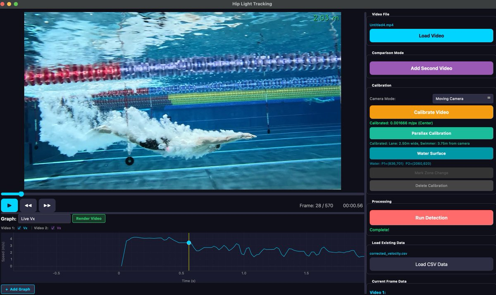

Computer Vision · Sports Analytics
Measuring swimmer velocity from a single poolside video
A desktop tool that turns poolside video into real-world speed data — without unreliable wearables, lengthy setup, or days of manual post-processing.

The problem
Measuring how fast a swimmer moves through the water usually means strapping on cables or other body-mounted sensors. In practice, that workflow breaks down quickly.
- Unreliable in the pool. Cables snag, adhesives fail, and sensors drift or drop out mid-set — especially during turns, underwater phases, and high-intensity training.
- Slow to set up. Fitting hardware, syncing devices, and checking signal quality can take longer than the swim itself, which makes routine use impractical for coaches.
- Slow to analyze. Raw sensor data often needs export, alignment, and manual cleanup before you get a usable velocity curve — turning one session into hours of work.
Video looks like the simpler path, but poolside footage usually comes from a moving camera. Track pixels naively and you measure the camera pan as much as the swimmer — so neither traditional sensors nor raw video alone give a trustworthy answer.

assets/problem.png
The solution
Hip Light Tracking detects a small light on the swimmer's hip and reference markers along the lane rope. The app includes parallax calibration (lane width + camera distance) and water surface marking to convert pixels → real-world meters correctly.
Parallax calibration
Two marker rows at different depths give separate px→m scales, so perspective distortion is handled properly.
Water surface marking
Two clicks on the water line anchor depth and help relate hip position to the pool geometry.
Camera motion correction
Reference markers move with the camera; subtracting their velocity isolates the swimmer's true speed.

assets/calibration.png
See it in action
From raw pool footage to corrected velocity curves and annotated output video — the full pipeline runs in a single desktop session.
assets/demo.mp4
Optional poster: assets/video-poster.jpg
Session outputs
Every session exports a corrected_velocity.csv plus a rendered video with
overlaid metrics — ready for coaching review or further analysis.
corrected_velocity.csv
Frame-by-frame hip position, velocity, and acceleration in real-world units (m/s).
frame,x,y,vx_m,vy_m,ax_m
142,812.4,391.2,1.84,-0.03,0.12
143,818.1,390.8,1.91,-0.02,0.09
144,824.0,390.5,1.88,-0.01,-0.04Annotated export
Rendered MP4 with detection overlays, marker labels, and live speed graph burned in.
output_with_markers.mp4output_trajectory_graph.mp4output_velocity.mp4

assets/outputs.png
Built with
A focused stack chosen for fast iteration on detection quality and a responsive analysis UI.
- RF-DETR Custom-trained detection for hip light, rope markers, and floor references
- PyQt6 Desktop UI for video playback, calibration workflows, and batch processing
- pyqtgraph Live velocity, speed, and acceleration graphs synced to video frames
- OpenCV Frame I/O, overlay rendering, and export pipeline

assets/stack.png